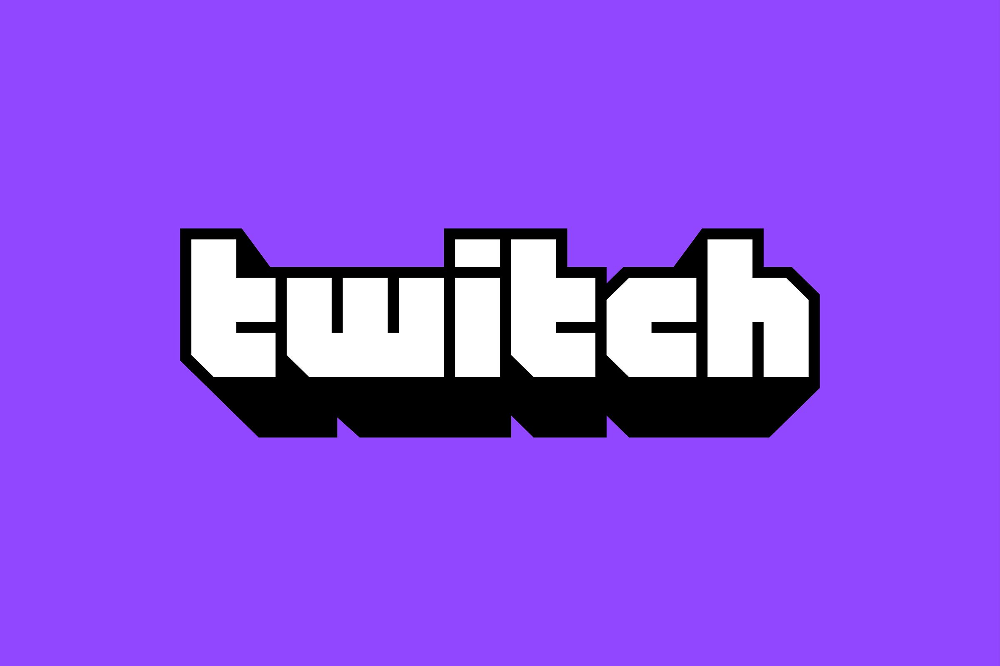

Twitch es una plataforma perteneciente a Amazon, Inc., que permite realizar transmisiones en vivo. Esta plataforma tiene como función principal la retransmisión de videojuegos en directo, un campo en el que tiene como competidor a YouTube. Presentado como un subproducto de otra plataforma de streaming de interés general, el sitio principalmente se enfoca a los videojuegos, incluyendo "playthroughs" de juegos jugados por usuarios, transmisión de eSports, y otros eventos relacionados con los videojuegos.
A mediados de 2013, el sitio conseguía un promedio de 43 millones de espectadores cada mes, y para febrero de 2014 fue considerada la mayor fuente de tráfico en internet en los Estados Unidos. Al mismo tiempo, la matriz de JustinTv fue renombrada "Twitch Interactive" para representar el cambio en sus prioridades. JustinTv fue cerrado en agosto de 2014.
En septiembre de 2014, Twitch fue comprado por Amazon por 970.482.567 USD.
Cuando JustinTv fue lanzado en 2007 por Justin Kan y Emmet Shear, el sitio fue dividido en diferentes categorías de contenido. La categoría de videojuegos creció especialmente rápido, y se convirtió en el contenido más popular del sitio. La plataforma fue patrocinadora activa de distintos torneos oficiales de videojuegos como Starcraft II: Wings of Liberty de Blizzard Entertainment, uno de los juegos competitivos más populares en Corea del Sur, Europa y América, además de ser disfrutable de ver para audiencias de entusiastas y casuales.
El 7 de junio de 2011, durante la Electronic Entertainment Expo, JustinTv lanza Twitch como un producto beta enfocado a los deportes electrónicos. El nombre está inspirado en el término "twitch gameplay" que es usado para referirse al tiempo de reacción de los jugadores.
"Diseñamos este sitio para apoyar a la comunidad de deportes electrónicos. Dado que todos en el equipo son jugadores, es un sitio creado por seguidores de los deportes electrónicos, para los seguidores de los deportes electrónicos". Emmett Shear, cofundador y CTO de JustinTv, y director general de Twitch. Twitch cuenta con alrededor de 80 empleados, y su central se encuentra en San Francisco.
Twitch ha sido apoyado por varias inversiones significantes de capital emprendedor, de $15 millones en 2012 (de los que $7 millones eran por parte de JustinTv), y $20 millones en 2013.
Especialmente desde el cierre de su competidor directo, Own3dTv, a principios de 2013, Twitch se ha convertido en el portal de streaming más popular de e-sports por una diferencia abismal con sus competidores, por lo que algunos concluyen que el sitio "tiene casi un monopolio en el mercado". La competencia de servicios de video, tales como Youtube y Dailymotion, comenzó a incrementar su contenido de videojuegos para competir, pero han tenido un impacto mucho menor hasta ahora. Para mediados de 2013, había más de 43 millones de visitantes en Twitch por mes, con cada visitante viendo una hora y media por día. Para febrero de 2014, Twitch es la cuarta mayor fuente de tráfico en internet en los Estados Unidos, por detrás de Netflix, Google, y Apple. Twitch genera 1,8 % del tráfico de Internet total de Estados Unidos en los periodos con mayor pico.
El 10 de febrero de 2014, la compañía matriz de Twitch, JustinTv, Inc. fue renombrada como Twitch Interactive, reflejando la mayor importancia del servicio sobre JustinTv en el negocio de la compañía. Ese mismo mes, un stream conocido como Twitch Plays Pokémon, intentó jugar a Pokémon Red con la participación directa de los espectadores, usando un sistema que transformaba los comandos del chat en controles del juego, y se volvió viral. Para el 17 de febrero, el canal había llegado a más de 6,5 millones de reproducciones totales desde su introducción cinco días antes, y estaba teniendo un promedio de 60 a 70 mil espectadores en vivo, con al menos el 10 % de ellos participando. El vicepresidente de Marketing Matthew DiPietro alabó el stream, considerándolo como "un ejemplo de cómo los videojuegos se han convertido en una plataforma de entretenimiento y creatividad que se extiende más allá de las intenciones originales de los desarrolladores del juego. Tras convidar un videojuego, un vídeo en vivo y la experiencia del participante, el canal había creado un entretenimiento híbrido exclusivo para la comunidad de Twitch. Esta es una prueba maravillosa de un concepto del que esperamos ver más en un futuro. Empezando con su Edición 2014, Twitch se convirtió en la plataforma oficial de streaming en vivo de la mundialmente reconocida Electronic Entertainment Expo.
El 18 de mayo de 2014, Variety informó por primera vez que Google había llegado a un acuerdo preliminar para adquirir Twitch por medio de una subsidiaría de YouTube por aproximadamente mil millones de dólares.
El 30 de julio de 2014, Steve Aoki transmitió un evento en vivo desde un club nocturno en Ibiza vía Twitch; el personal del sitio declaró interés por la música en vivo en la plataforma de ambos, los usuarios y la industria musical, como un estímulo para la transmisión. La aparición de Aoki no fue la primera vez que un concierto se transmitió en la página, ya que Twitch transmitió una presentación de "Video Games Live" desde San Diego en EE. UU., en julio de 2013, patrocinada por Ubisoft y Amazon.
El 5 de agosto de 2014, el sitio original de JustinTv fue cerrado repentinamente, declarando que todos los recursos debían ser enfocados en su totalidad a Twitch. El 6 de agosto de 2014, Twitch introdujo un sistema de archivo actualizado a su acceso en multi-plataformas, destacando las transmisiones pasadas de algún canal y dando paso a video de alta calidad, el incremento de servidores y una nueva interfaz del gestor de videos para gestionar transmisiones pasadas y organizar "highlights" de las transmisiones; las cuales también se pueden exportar a YouTube. Debido a las limitaciones tecnológicas y requerimientos de recursos, el nuevo sistema tenía algunos retrocesos; la opción de archivar transmisiones por un periodo de tiempo indefinido ("save forever") fue eliminada, significando que sólo se pueden mantener durante un máximo de 14 días, o 60 para "partners" y suscriptores "Turbo". Aunque los "highlights" pueden permanecer de manera indefinida, son limitados a dos horas de duración. También, todos los videos bajo demanda se convirtieron en objeto de un proceso de Huella digital acústica usando un software de Audible Magic; si hay música con derechos de autor (particularmente, canciones hechas por usuarios fuera del juego que se está jugando) es detectada, una porción de 30 minutos en la que se encuentre la canción será silenciada. Las transmisiones en vivo no están sujetas a esta censura.
Los sistemas de filtrado de audio, acompañado de la falta de comunicación acerca de los cambios en general, demostró ser controversial entre los usuarios. Particularmente, los usuarios sentían que el nuevo sistema de filtrado era inadecuado, la música era detectada aunque proviniera del mismo juego, y expresaron su preocupación de que pudiera afectar la habilidad del servicio para presentar juegos que incluyen grandes cantidades de canciones con derechos de autor, tales como La serie de Grand Theft Auto. El cambio también trajo comparaciones a las políticas empleadas por Youtube especialmente dados los rumores acerca del interés de Google por la empresa. En una serie de preguntas y respuesta vía Reddit, el cofundador Emmet Shear admitió que su equipo lo había "arruinado" y que debieron haber advertido previamente de los cambios y prometió que Twitch no tiene intenciones de implementar el filtro de audio en las transmisiones en vivo. El 7 de agosto de 2014, el límite de 2 horas en los "highlights" fue eliminado otra vez y un proceso de apelación (¿ante quien?) para los videos marcados con infracción de derechos de autor en los videos on-demand fue añadido. En enero de 2014, para rectificar aún más estos problemas, Twitch introdujo una librería totalmente gratis para los usuarios en sus streams.
El 25 de agosto de 2014, fue anunciado que Amazon adquiriría Twitch interactive por USD970 millones. Se esperaba que el trato finalizara para finales del 2014. Fuentes informaron que el trato con Google fracasó dejando a Amazon hacer su oferta; Forbes reportó que Google se retractó del trato debido a la probable infracción al Derecho de la competencia gracias a su actual propiedad, YouTube. La adquisición fue cerrada el 24 de septiembre de 2014.
Twitch ahora opera como una subsidiaría propiedad de Amazon Inc, con Emmett Shear quedando como CEO. Shear promocionó a la plataforma de Amazon Web Services como un aspecto "atractivo" del trato, y que Amazon había "construido relaciones con los grandes actores de los medios de comunicación" que podría ser utilizado como una ventaja del servicio- particularmente en el reino de la licencia de contenido. La compra de Twitch marcó la tercera compra reciente orientada al video de videojuegos por parte de Amazon, que anteriormente había adquirido a los desarrolladores Reflexive Entertainment y Double Helix Games.
El 9 de diciembre de 2014, Twitch anunció que había adquirido GoodGame Agency, una organización conocida por ser dueña del equipo de e-sports Evil Geniuses.
En enero de 2015, Twitch introdujo una categoría oficial de streams orientados a música en versión beta, incluyendo streams de producción musical y streams de música ya existente.
Twitch está diseñada como una plataforma para una cobertura de electronic sports en tiempo real. Esto incluye una gran cobertura de torneos de e-sports, streams personales de jugadores individuales y shows que hablen de contenido relacionado con los juegos. Una gran variedad de canales hacen Speedruns. La página principal de Twitch actualmente muestra juegos basados en su audiencia. Los espectadores son en su mayoría hombres de entre 18 y 34 años. Twitch está buscando ampliar su demografía de visualización, incluyendo la atracción de más jugadoras. Para lograr esto, una de las metas propuestas es aumentar los tipos de juegos que la gente viene a espectar. Otra propuesta por parte de la plataforma ha sido "Twitch Creative", una sección que debutó en octubre de 2015 con un maratón ininterrumpido de las 31 temporadas de "The joy of painting" con Bob Ross, en colaboración con Janson Media y BobRoss Inc con el fin de ampliar su audiencia a un público ajeno al de los videojuegos. Dentro de esta sección los usuarios podrían realizar transmisiones de pintura, dibujo, animaciones creadas por ellos, cocina y tutoriales entre otros. Acorde a las estadísticas de la plataforma se registraron 5,6 millones de visitas únicas.
El 14 de marzo de 2017, Twitch lanzó en el canal Twitch Presents un maratón de 17 días con los 831 episodios de los Power Rangers, desde Mighty Morphin Power Rangers hasta Dino Charge. El proyecto logró conseguir un total de 12,9 millones de visitas únicas y una tasa de 69.529 espectadores simultáneos. Posteriormente, se transmitió el 29 de mayo de 2018 una emisión de las series clásicas de Doctor Who, y el 27 de agosto un maratón con los 932 episodios y 16 películas de Pokémon en 6 idiomas distintos: inglés, portugués, francés, alemán, español e italiano. Del mismo modo se realizaron emisiones exclusivas del servicio Amazon Prime y pequeñas colaboraciones con otros servicios de streaming como Crunchyroll.
Los canales en Twitch ofrecen streams para reunir dinero para fines benéficos. Para 2013, el sitio había organizado eventos en los que, en total, juntaron más de $8 millones de dólares en donaciones para causas benéficas, como Extra Life 2013.
A finales de 2013, principalmente por el incremento de espectadores y el uso de un plugin de Adobe Flash para presentar vídeo a los usuarios de computadoras de escritorio, Twitch tuvo problemas de desfase, particularmente en Europa. Twitch procedió a añadir nuevos servidores en esa región e implementó un nuevo sistema de vídeo que sería más eficiente que el anterior. Inicialmente, el nuevo sistema de vídeo fue criticado por los usuarios porque causaba un retraso significativo del stream, interfiriendo con la interacción emisor-espectador. El equipo de Twitch dijo que el incremento en el retraso solo era temporal y para ese tiempo, era una compensación aceptable para la disyunción del tiempo de carga del vídeo (buffering).
En julio del 2011, Twitch lanzó su programa de Partners, que llegó a los 4,000 miembros para junio del 2013 Similar al "Partner Program" de otros sitios de videos como YouTube, este permite a productores de contenido populares compartir las ganancias generadas por la publicidad en sus streams.
La publicidad en el sitio ha sido manejada por un número de socios. En el 2011, Twitch tuvo un trato exclusivo con Future US. El 17 de abril de 2012, fue anunciado un acuerdo en el que Twitch le daba un exclusividad para vender publicidad, promociones y patrocinios a la comunidad dentro de la página a CBS Interactive. El 5 de junio del 2013, Twitch anunció la formación de Twitch Media Group, un nuevo equipo interno dedicado a vender la publicidad de la página, removiendo a CBS interactive.
Twitch está disponible como una aplicación móvil en los sistemas operativos iOS y Android. Entre sus características principales se incluye la reproducción de streams en alta definición y en formato horizontal. Ofrece una opción de navegación de los streamers más populares. Los usuarios pueden navegar por títulos de juegos o por juegos populares. La aplicación también permite a los usuarios seguir a sus canales favoritos y tienen un chat dentro de la aplicación que permite a los espectadores chatear con otros espectadores.
Twitch se ha integrado a un software de PC, incluyendo el streamear video a Twitch directo desde el Origin software de Electronic Arts, UPlay de Ubisoft, juegos jugados con una tarjeta gráfica Nvidia moderna (vía una función del driver ShadowPlay), y juegos como Minecraft y Eve Online. Los jugadores también tienen la posibilidad de conectar sus cuentas de Twitch con el software de steam de Valve Corporation. En 2013, Twitch lanzó un Kit de desarrollo de software que permite a cualquier desarrollador integrar una forma de streamear a Twitch directamente desde su juego.
Twitch también apoya el stream desde ciertas consolas. Twitch se ha dedicado al software para el Xbox 360, Ouya, PlayStation y el Xbox One. también está para la Nintendo switch. El CEO Emmett Shear ha declarado su deseo de apoyar una gran variedad de plataformas, diciendo "Todas las plataformas en las que la gente ve vídeos, ahí queremos estar.
